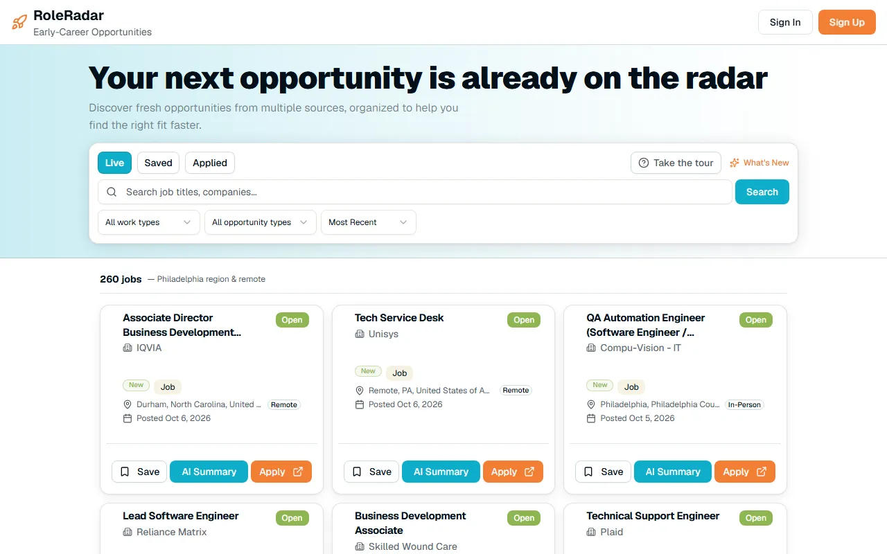

RR-01 Job board

Role Radar
A job board for early-career opportunities — tech, IT, engineering, internships, fellowships and more — gathered from multiple sources into one place to search, filter and track.
- For
- Early-career students
- My role
- Sole developer
- Built with
- Next.js · React
- Status
- Completed
What's inside
- Live, Saved and Applied views, so a listing can be followed from discovery to application
- Search by job title or company, with filters for work type and opportunity type, and a sort order
- An AI Summary on every listing, next to Save and Apply
- A built-in guided tour and a What's New panel
- Listings focused on the Philadelphia region and remote roles
My part
I was the sole developer — I built Role Radar myself, including everything listed here.
Notes
Completed, and live on Vercel.